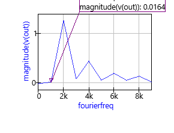
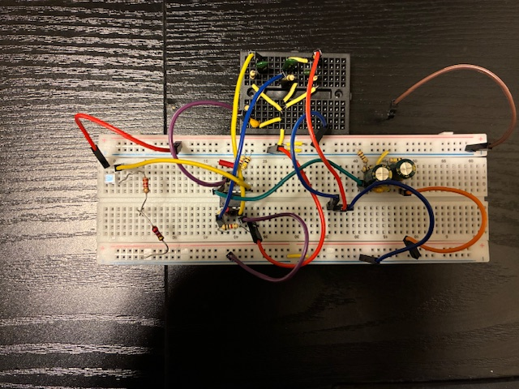
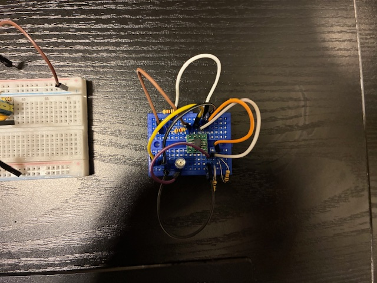
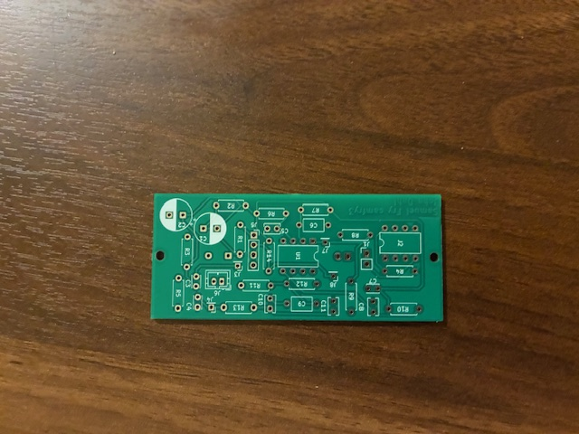
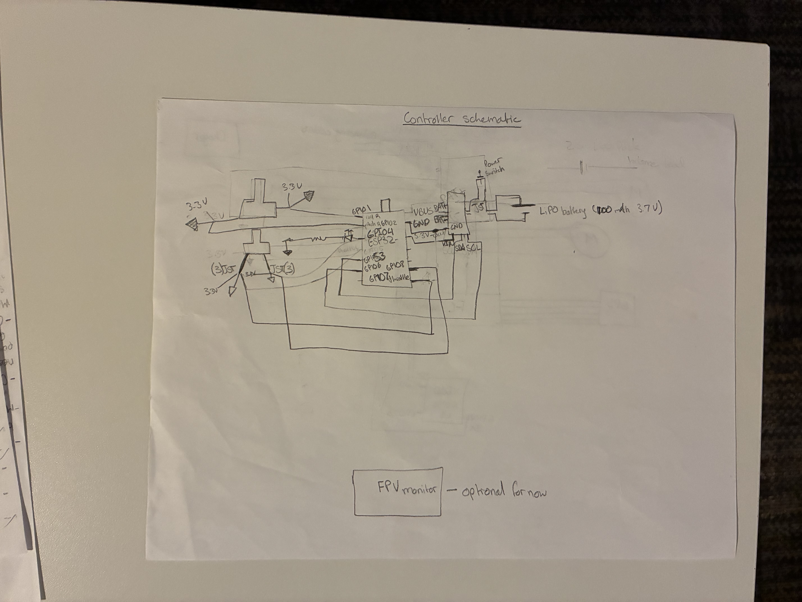
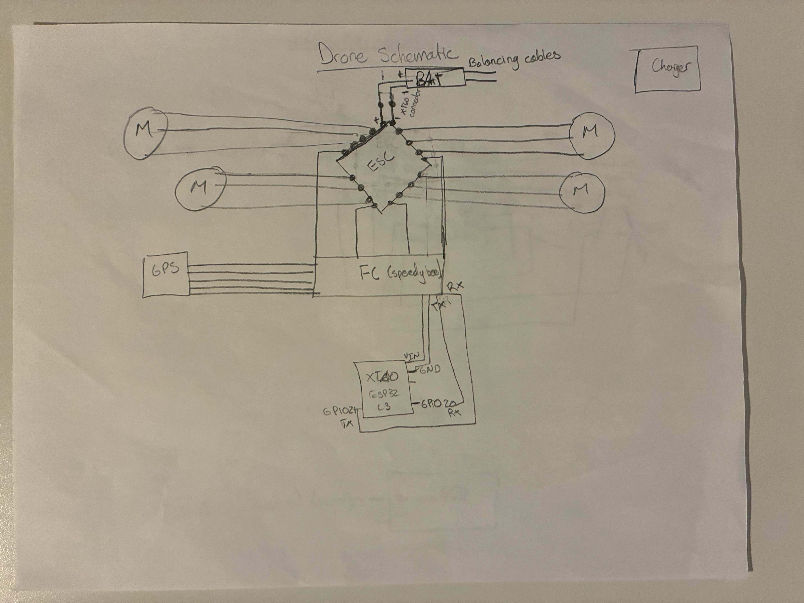
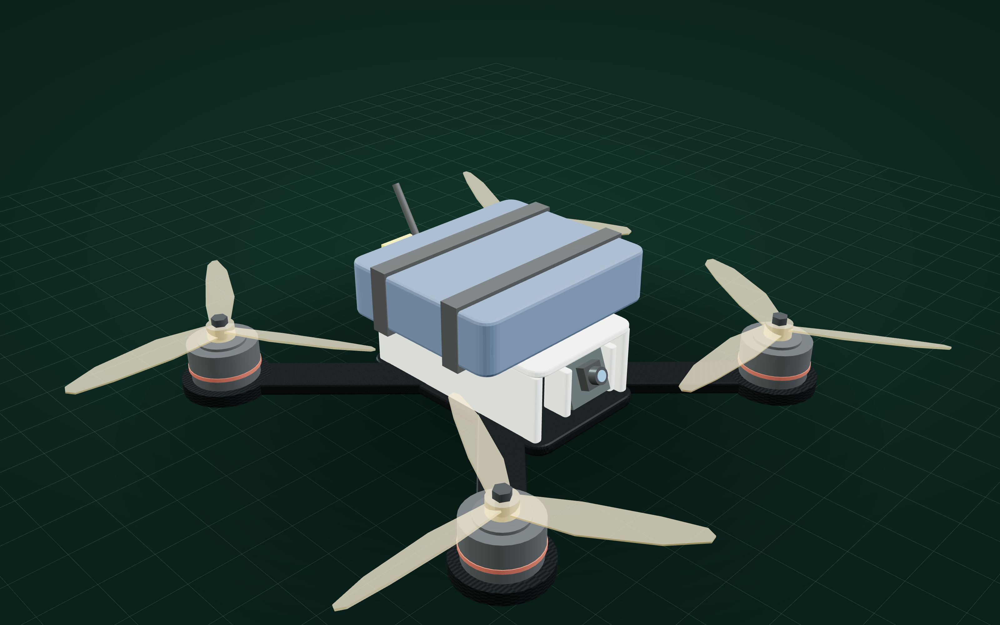

Electrical Engineering Student | Brigham Young University
I'm an Electrical Engineering student at Brigham Young University with interests in embedded systems,
power electronics, automation, and process control. My technical experience spans C/C++, BLE and
Bluetooth integration, circuit modeling and simulation with NGspice, breadboard prototyping, and
laboratory testing with oscilloscopes. I enjoy working across the boundary between hardware and
software, taking ideas from initial concepts through circuit design, prototyping, and testing.
Beyond academic coursework, I have pursued projects such as Ripple Case, a hearing-assistance device
designed to help individuals with hearing loss navigate overstimulating audio environments, and a
custom drone developed as a personal engineering project.
I am particularly interested in practical engineering problems that combine electronics,
embedded programming, and system-level design. I value understanding why a design works,
validating it through measurement, and improving it when real-world behavior differs from
theoretical expectations.
Areas of interestEmbedded systems, power electronics, automation, process control
Design approachAnalyze, simulate, prototype, measure, and revise
02 / Coursework
EC EN 340 — Electronic Circuit Design I
These artifacts document several stages of my EC EN 340 work, from analog circuit design
and experimental characterization to a transmitter circuit and a fabricated printed circuit
board. Together, they demonstrate circuit analysis, simulation, laboratory measurement,
component research, and PCB layout.
Artifact 1: Receiver circuit design and simulation
ProblemDesign a circuit that filters and amplifies a target frequency band for a laser-tag receiver.
ContributionDeveloped and evaluated the receiver's filter and amplifier stages in NGspice.
ResultProduced a cascaded amplifier/filter design and used simulation to examine its frequency response.
DemonstratesAnalog circuit design, filter analysis, gain and bandwidth tradeoffs, and simulation.
I began with the provided starter schematic and developed the circuit incrementally. I
considered the power supply, op-amp gain-bandwidth limitations, and the high-pass and
low-pass behavior of the filter stages. Because the op-amps were non-ideal, simulation
required attention to practical device limitations rather than relying only on ideal
amplifier assumptions.
I used NGspice to evaluate the response and to compare alternative feedback configurations.
The design was then carried into a physical breadboard implementation for laboratory testing.
Receiver circuit schematic from the initial design work.Comparison data used when considering op-amp gain and bandwidth.

Theoretical frequency-response plot used as a reference for experimental comparison.
Artifact 2: Receiver breadboard implementation and testing
ProblemTranslate the simulated receiver design into a working physical circuit.
ContributionBuilt and tested the breadboard circuit, including the second filter stage and second op-amp.
ResultCompleted the second-stage filter and collected experimental data from the final breadboard.
DemonstratesPrototyping, laboratory instrumentation, troubleshooting, and comparison of measured and simulated behavior.
After developing the schematic, I assembled the circuit on a breadboard and tested it using
laboratory equipment. The final breadboard implementation included the second filter stage
with a second op-amp. I collected measurement data to evaluate the circuit's behavior.
This stage connected the theoretical and simulated design to a physical implementation.
It also provided an opportunity to observe how real components and wiring affect circuit
behavior.

Receiver breadboard implementation.

Additional circuit prototype used during the laboratory work.Receiver board real frequency response.
Artifact 3: Laser-tag transmitter circuit
ProblemControl the frequency of the LED pulses emitted by the laser-tag transmitter.
ContributionTested the circuit on the laboratory bench and verified LED current behavior.
ResultUsed the CAT4104 LED driver breakout board and test points to check circuit operation.
DemonstratesDatasheet interpretation, component integration, current verification, and teamwork.
The transmitter controls the light-pulse frequency emitted by the laser-tag gun. The
resistance connected to the driver's RESET pin affects the pulse behavior. I worked with
a CAT4104 LED driver on a breakout board and tested the circuit using the available test
points, checking that the current through the LED was appropriate.
This work strengthened my ability to read component datasheets, especially pin assignments
and input constraints. It also reinforced the value of dividing a larger project into
parallel tasks and coordinating with a teammate.
Transmitter schematic.Prototype board used during circuit development.Frequency output transmitter test.
Artifact 4: Lab 4 — Predicting diode parameters
ProblemEstimate the diode parameters saturation current (IS), ideality factor (n), and series resistance (RS).
ContributionDesigned a test circuit, collected voltage measurements, calculated current, and interpolated the resulting data.
ResultPredicted diode parameters and checked the predictions against a separate simulated test circuit.
DemonstratesDevice characterization, measurement-based modeling, data interpolation, and simulation validation.
The goal of this lab was to predict the electrical parameters of the diode used in the
transmitter board. I developed a test circuit in which a PMOS transistor acted as a
controllable current source. By sweeping its gate voltage, I collected operating points
and measured the voltage across the diode and across a resistor connected to ground.
The resistor voltage allowed me to calculate the diode current at each operating point.
I then used the collected data and a Python interpolation script to estimate the diode's
IS, n, and RS parameters. To evaluate the predictions, I built a
separate test circuit and compared its measured current with the Qucs-S simulation.
This lab taught me how to design a test circuit for characterizing a component, use a
transistor as a practical current source, and extract a useful model from a collection
of measured data points.
Test circuit used to collect diode voltage and current data.
Add the diode measurement plot, parameter-fit results, and validation measurements here
when those final figures are selected.
Artifact 5: KiCad schematic and PCB design
ProblemTranslate the circuit design into a manufacturable PCB layout.
ContributionCreated the KiCad schematic and PCB layout, mapping the Qucs-S design and selecting footprints.
ResultCompleted the first PCB layout and received the fabricated board.
I independently created the KiCad schematic and PCB layout, translating the circuit
design from Qucs-S into KiCad. I used existing library footprints and had to determine
which footprint styles matched the physical components, including different capacitor
package and lead configurations.
During layout, I prioritized keeping traces close to the components they connected.
I also considered the placement of larger components, keeping them away from board
edges where possible, before completing the remaining routing. I used a tutorial from
the teaching assistant as a reference while learning the KiCad workflow:
KiCad tutorial.
Amplifier portion of the schematic.Connector schematic.Transmitter schematic.Power supply schematic.PCB routing and bottom-side view.Three-dimensional PCB render before fabrication.

Fabricated PCB received from the board manufacturer. Components have not yet been soldered.
Current status: The first PCB revision has been fabricated and received.
It has not yet been populated or electrically tested, so its final performance and any
required revisions are not yet known.
03 / Innovation project
Ripple Case
Ripple Case is an interdisciplinary project developed through the Crocker Fellowship,
an innovation and commercialization program. The project has evolved through several
concepts, including discreet communication between a parent and a deaf child, and its
current focus: helping hearing-aid users adapt to overstimulating audio environments.
The current concept uses a microphone array and a connected device to help improve
environmental awareness and listening experiences for people with hearing loss. The work
combines hardware prototyping, embedded systems, software development, and product design.
This is a personal engineering project I began as a birthday and Christmas present for
my teenage brothers-in-law. The project is currently in its early design stage.
I am developing the remote controller and drone electronics, working through the initial
schematics and system concept before moving into implementation.

Remote controller schematic.

Drone schematic.

Concept render of the drone.
05 / BYU mission
Connection to the BYU Aims
My experience studying electrical engineering has helped me see secular and spiritual
learning as interconnected rather than mutually exclusive. As I study circuits and
electronics, I gain a deeper appreciation for the order, complexity, and underlying
principles of the physical world. That learning has strengthened my faith in God and
my trust in His plan.
This reflects BYU's aim of developing spiritual strength alongside intellectual
enlargement. I see engineering education as an opportunity not only to gain technical
knowledge, but also to become more thoughtful about how that knowledge can be used
responsibly and in service of others.
At the beginning of the semester, I had less experience taking an analog circuit from
an initial design through simulation, physical prototyping, measurement, and PCB layout.
Through EC EN 340, I have developed a more complete design process. I can analyze and
simulate filter and amplifier circuits, build and test physical prototypes, use
experimental measurements to characterize components, and translate a circuit schematic
into a PCB layout in KiCad.
I have also learned that engineering requires more than obtaining a theoretically correct
result. Component limitations, datasheet constraints, measurement methods, and physical
implementation all influence whether a design works as intended.
How this portfolio was revised
This revision organizes the portfolio around a professional introduction, clear project
navigation, and selected engineering artifacts. The EC EN 340 work is now presented as
a progression from circuit design and simulation to breadboard testing, transmitter
development, diode characterization, and PCB design. Each artifact identifies the
engineering problem, my contribution, the result or current status, and the skills it
demonstrates. Captions and supporting images provide evidence of the design process. This checkpoint
leveraged AI in order to easily create a professional profile. The previous checkpoint was used
as a template/layout and additional information was added for each artifact and project.
What I would improve next
The next step is to solder and test the fabricated PCB, document its measured performance,
and compare the results with the original simulations. I would also like to complete a
measured-versus-theoretical receiver frequency-response comparison once the input and
output measurement files have been identified.